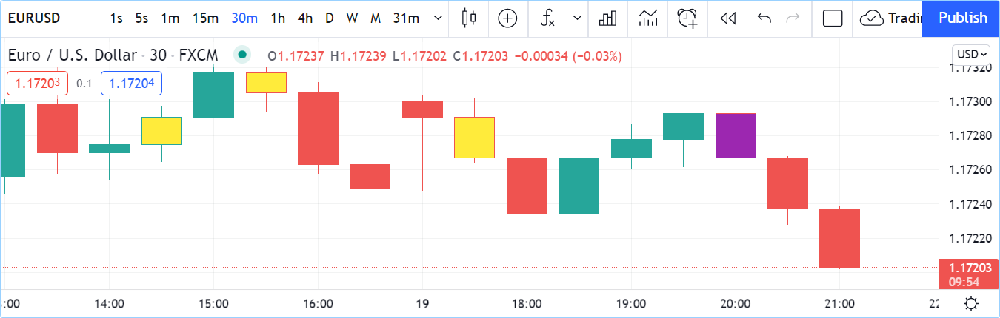

Bar coloring¶
The barcolor() function lets you color chart bars. It is the only Pine Script® function that allows a script running in a pane to affect the chart.
The function’s signature is:
barcolor(color, offset, editable, show_last, title) → void
The coloring can be conditional because the color parameter accepts “series color” arguments.
The following script renders inside and outside bars in different colors:
//@version=5
indicator("barcolor example", overlay = true)
isUp = close > open
isDown = close <= open
isOutsideUp = high > high[1] and low < low[1] and isUp
isOutsideDown = high > high[1] and low < low[1] and isDown
isInside = high < high[1] and low > low[1]
barcolor(isInside ? color.yellow : isOutsideUp ? color.aqua : isOutsideDown ? color.purple : na)
Note that:
- The na value leaves bars as is.
- In the barcolor() call, we use embedded ?: ternary operator expressions to select the color.